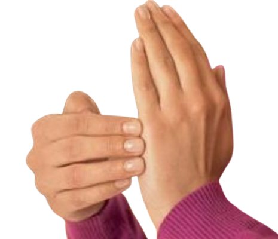

Si estás leyendo esto, es probable que conozcas bien la sensación de tener el cuerpo presente, pero la mente a mil kilómetros por hora. Vives saltando de una tarea a otra, intentando ser la mujer, la profesional o la madre perfecta, y sintiendo que al final del día la culpa te susurra al oído que "podrías haberlo hecho mejor".
Nos han enseñado a buscar soluciones afuera, a "esforzarnos más", pero la verdadera sanación no ocurre forzando las cosas; ocurre cuando le enseñamos a nuestro cuerpo y a nuestra mente que ya es seguro relajarse.
Antes de darte cualquier herramienta, necesitas escuchar esto: la ansiedad, la culpa y el estrés que sientes no son un defecto en ti.
Cuando vivimos bajo presión constante, nuestro sistema nervioso se queda estancado en la respuesta de "lucha o huida". No puedes pensar con claridad cuando tu cuerpo cree que está siendo perseguido. Por eso, el primer paso para sanar no es "cambiar tu mentalidad", sino calmar tu fisiología.
Para entender por qué no puedes simplemente "relajarte", necesitamos mirar cómo estamos diseñados biológicamente.
Tu sistema nervioso autónomo tiene, a grandes rasgos, dos modos de operación:
Hace miles de años, el "acelerador" se encendía si nos perseguía un depredador. El problema es que hoy en día, tu cerebro más primitivo (la amígdala) no distingue entre la amenaza de un león y la amenaza de una bandeja de correos llena, el llanto de un niño que no quiere comer, o la presión financiera.
Cuando vives autoexigiéndote, tu cerebro lee esto como: "Estamos en peligro constante". Tu cuerpo se inunda de cortisol y adrenalina. En este estado de supervivencia:
"No estás fallando, no eres débil. Estás experimentando una respuesta fisiológica perfecta a un nivel de estrés insostenible."
Tu cuerpo está haciendo exactamente lo que debe hacer para mantenerte viva, pero necesita que tú le avises que la emergencia ya pasó.
Prácticas interactivas basadas en neurociencia y psicología holística para interrumpir el ciclo del estrés al instante.
El nervio vago es el interruptor principal de la calma. La técnica 4-7-8 estimula este nervio y le ordena a tu ritmo cardíaco que disminuya.
Libera la carga eléctrica de emociones atrapadas como la culpa o frustración, reprogramando la respuesta de tu cerebro.

Nuestra mente, condicionada por el miedo, siempre buscará culpables. Esta herramienta es para reconectar con tu esencia cuando la mente te ataca. Lleva la mano a tu pecho y responde desde tu interior.
Estas herramientas apagan los incendios diarios. Pero si quieres dejar de reaccionar constantemente, necesitamos ir a la raíz y reprogramar tu mente subconsciente.
Un viaje inmersivo de 16 sesiones de audio. Utiliza frecuencias cerebrales y neurociencia para limpiar el miedo, la culpa y la escasez, sin esfuerzo de tu parte. Solo debes escuchar y permitir que la sanación ocurra.
Despierta tu luz. Libera tu poder.